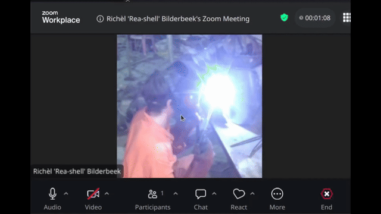
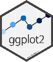

Introduction¶
Learning outcomes
- Understand the goal of the course
For teachers
Teaching goals are:
- Learners have heard to goal of the course
Questions at start:
- What is R?
- Why use R for plotting?
- What is
ggplot2? - Why use
ggplot2for plotting? - What is RStudio?
- Why use RStudio?
Questions at end:
- Is it OK to work in Python?
- Is it OK to use AI?
- Is it OK to use other R libraries for plotting?
- Is it OK to skip chapters you already know?
- Is it OK to leave early?
Goal of this course¶
The goals of this course
Create a plot needed for the Scientific Illustration and Data Visualisation course.
This course is optional.
flowchart TD
do_you_need_a_plot[Do you need a plot?]
do_you_want_to_try_yourself[Do you want to try on your own?]
leave[You are encouraged to leave]
work_in_breakout_rooms[You are welcome in my breakout rooms now]
follow_the_course[You are welcome to follow my course structure]
do_you_need_a_plot --> |No| leave
do_you_need_a_plot --> |Yes| do_you_want_to_try_yourself
do_you_want_to_try_yourself --> |Yes| work_in_breakout_rooms
do_you_want_to_try_yourself --> |No| follow_the_courseThis course setup¶
- This workshop is aimed at learners from any initial skill level.
- We use R: this seems to be most common in this course
- We use R's
ggplot2library: this is the most used plotting library in R and it is very tunable - We use a free book,
so that you can learn R and
ggplot2 - We use breakout rooms, so we can talk in small groups
- You can work alone or in a group of two/three
- Breaks are sacred, the schedule is not Advanced learners will likely finish earlier. Beginner learners will get the extra time and help they need.
- You are encouraged to leave when you are done and having filled in the course evaluation. Do say bye: it is the human thing to do
- You can always leave feedback anonymously that will be published: this helps improve the course
Sometimes I will ask for a 'Yes' or 'No' reaction. Here is where you can find these in Zoom:

Why use R?¶
- R is a Turning-complete programming language
- R is widely used: it is among the top 10 most used programming languages and probably among the top 2 of programming languages used in academia
- R is a free and open-source language
- R works on all major operating systems
- R has many packages: a package is a body of code written by others that you can use easily. Currently, there are around 25,000 general packages and around 2,000 packages specialized for the life sciences. Whatever you are looking for, R probably has a package for just that!
Why use ggplot2?¶

ggplot2is an R package for plottingggplot2is widely used: it is among the top 100 most downloaded R packagesggplot2has the most commonly used plots available, e.g. those showcased in this galleryggplot2has many extensions to plot even more, e.g. those showcased in this galleryggplot2uses a grammar of graphics, which allows you to express your plotting needs in codeggplot2can create publication-ready plots: you will start recognizing them :-)
Why use the book 'R for Data Scientists'?¶
- The book 'R for Data Scientists' is about
using R and
ggplot2to visualize data - The book is free and open access
- The book is both digital and in paper
- The book follows best practices, e.g. the Tidyverse approach